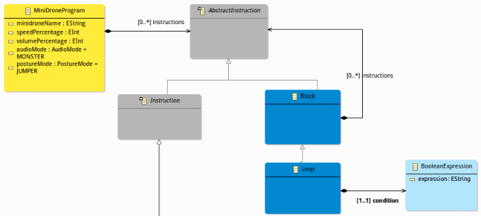
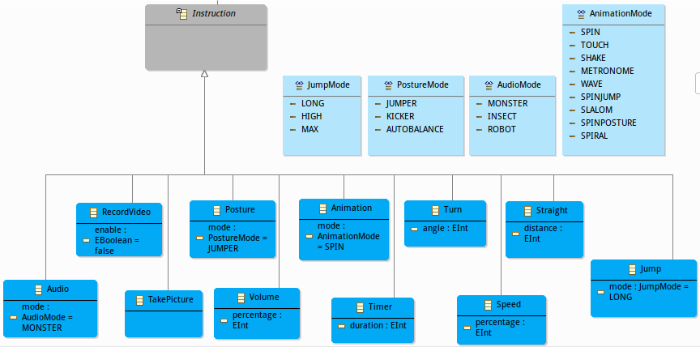
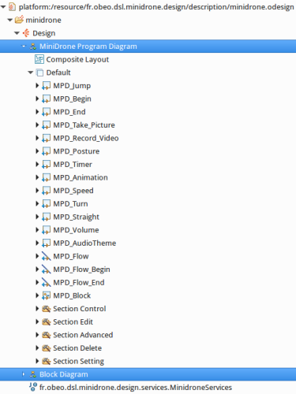
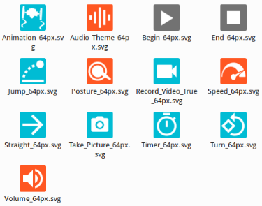
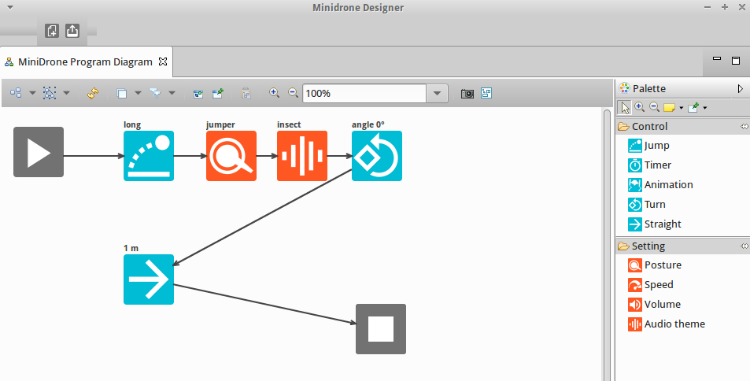

Roland Bary – Obeo
ihm.c
void *IHM_InputProcessing(void *data){
IHM_t *ihm = (IHM_t *) data;
int key = 0;
if (ihm != NULL){
while (ihm->run){
key = getch();
else if(key == KEY_UP){
if(ihm->onInputEventCallback != NULL){
ihm->onInputEventCallback (IHM_INPUT_EVENT_FORWARD,
ihm->customData);
}
}
usleep(10);
}
}
return NULL;
}
JumpingSumoPiloting.c
// IHM callbacks:
void onInputEvent (eIHM_INPUT_EVENT event, void *customData){
// Manage IHM input events
ARCONTROLLER_Device_t *deviceController = (ARCONTROLLER_Device_t *)customData;
eARCONTROLLER_ERROR error = ARCONTROLLER_OK;
switch (event){
case IHM_INPUT_EVENT_FORWARD:
if(deviceController != NULL)
{
// set the flag and speed value of the piloting command
error = deviceController->jumpingSumo->
setPilotingPCMDFlag (deviceController->jumpingSumo, 1);
error = deviceController->jumpingSumo->
setPilotingPCMDSpeed (deviceController->jumpingSumo, 50);
}
break;
default:
break;
}
MyJumpingSumoPiloting.c
/** Create a discovery device to find a drone around **/
discoveryDevice = ARDISCOVERY_Device_New();
ARDISCOVERY_Device_InitWifi(discoveryDevice,
ARDISCOVERY_PRODUCT_JS, "JS","192.168.2.1",44444);
/** Create a device controller with the discovery device **/
deviceController = ARCONTROLLER_Device_New(discoveryDevice);
/** Add a command receive callback **/
ARCONTROLLER_Device_AddCommandReceivedCallback(deviceController,
commandReceived, deviceController);
/** Start the device controller **/
ARCONTROLLER_Device_Start(deviceController);
/** Using the device controller **/
/** Stop the device controller **/
void stopDeviceController(ARCONTROLLER_Device_t *deviceController) {
ARCONTROLLER_Device_Stop(deviceController);
}
MyJumpingSumoPiloting.c
/** Send a command to move forward **/
void straight(ARCONTROLLER_Device_t *deviceController, int distance){
deviceController->jumpingSumo->setPilotingPCMDFlag(
deviceController->jumpingSumo, 1);
deviceController->jumpingSumo->setPilotingPCMDSpeed(
deviceController->jumpingSumo, speedPercentage);
usleep(computeStraightUsleep(distance, speedPercentage));
}
main.c
int main(int argc, char **argv) {
//local declarations
/**Initialisation **/
// Create new discovery device
// Create new device controller
// start the device controller
/** Piloting **/
// Straight 1 m
straight(deviceController, 2);
// Jump High
jump(deviceController, HIGH);
/** End **/
stopDeviceController(deviceController);
return EXIT_SUCCESS;
}
Un DSL décrivant un programme pour minidrone.
Un DSL décrivant un programme pour minidrone.
La spécification du modeleur.
L'aspect graphique.
Génération de code.
int main(int argc, char **argv) {
//local declarations
/**Initialisation **/
// Create new discovery device
// Create new device controller
// start the device controller
/** Piloting **/
// Straight 1 m
straight(deviceController, 2);
// Turn 90°
turn(deviceController,90);
// Jump High
jump(deviceController, HIGH);
/** End **/
stopDeviceController(deviceController);
return EXIT_SUCCESS;
}
Minidrone Designer
Upload du code généré.
/**
* Called to upload the minidrone program generated to the minidrone
* @param minidroneProgram
*/
public void upload(MiniDroneProgram minidroneProgram) {
// Call acceleo code generation
File genOutputFolder = generateCode(minidroneProgram);
String compilePath = genOutputFolder.toString();
String make_clean_command = "make clean -C " + compilePath;
String make_command = "make -C " + compilePath;
String make_run_command = "make run -C " + compilePath;
// perform a make clean command on the C program folder
executeCommand(make_clean_command);
// perform a make command on the C program folder
executeCommand(make_command);
// perform a make run command on the C program folder
executeCommand(make_run_command);
}
La validité du odesign.
/**
* Validation test on the VSM to check whether there is no error when
* validate VSM.
*/
@Test
public void isValid() {
Diagnostician diagnostician = new Diagnostician();
Diagnostic diagnostic = diagnostician.validate(minidroneModeler);
switch (diagnostic.getSeverity()) {
case Diagnostic.ERROR:
fail("The VSM is not valid due to theses errors : " + diagnostic);
case Diagnostic.WARNING:
fail("The VSM is not valid due to theses warnings : " + diagnostic);
break;
}
}
Les expressions interpretées.
/**
* Check whether a interpreted expression from the VSM is AQL or a Sirius Specific interpreter expression.
*/
@Test
public void isAQLorSpecificInterpreterExpressionCall(){
ServicesTestsUtils.isAQLServiceCall(underTest.getExpression());
ServicesTestsUtils.isSpecificInterpretedExpressionCall(underTest.getExpression());
}
Les extensions Java.
/**
* Check if a java extension referenced from the viewpoint specification exists
*/
@Test
public void existsOnlyValidJavaExtensions() {
Set allExtensions = new HashSet();
List invalidJavaExtensions = new ArrayList();
ServicesTestsUtils.collectJavaExtensionsFromMinidroneDesignerViewpoints(allExtensions);
for (JavaExtension extension : allExtensions) {
try {
Class.forName(extension.getQualifiedClassName());
} catch (ClassNotFoundException e) {
invalidJavaExtensions.add(e.getMessage());
}
}
if (!invalidJavaExtensions.isEmpty()) {
String message = "";
for (String invalidJavaExtension : invalidJavaExtensions) {
message += invalidJavaExtension + "\n";
}
fail("Java extensions not found : \n" + message);
}
}
Les services Java déclarés.
/**
* Check whether all Java declared services are used
*/
@Test
public void isUnusedDeclaredService() {
if (!allServiceCalls.contains(underTest.getName())) {
fail("Declared service " + underTest + "is not referenced by the odesign");
}
}
Les appels de services Java.
/**
* Check if a service called from a interpreted expression exists.
*/
@Test
public void isValidService() {
String expression = underTest.getExpression();
String service = ServicesTestsUtils.getServiceCall(expression);
if (service != null && !allServices.contains(service)) {
fail("The following expression :" + underTest.getExpression()
+ "refers to an invalid service :" + service + " See :"
+ underTest.getFeature().getName() + " of object "
+ EcoreUtil.getURI(underTest.getDeclaration()));
}
}